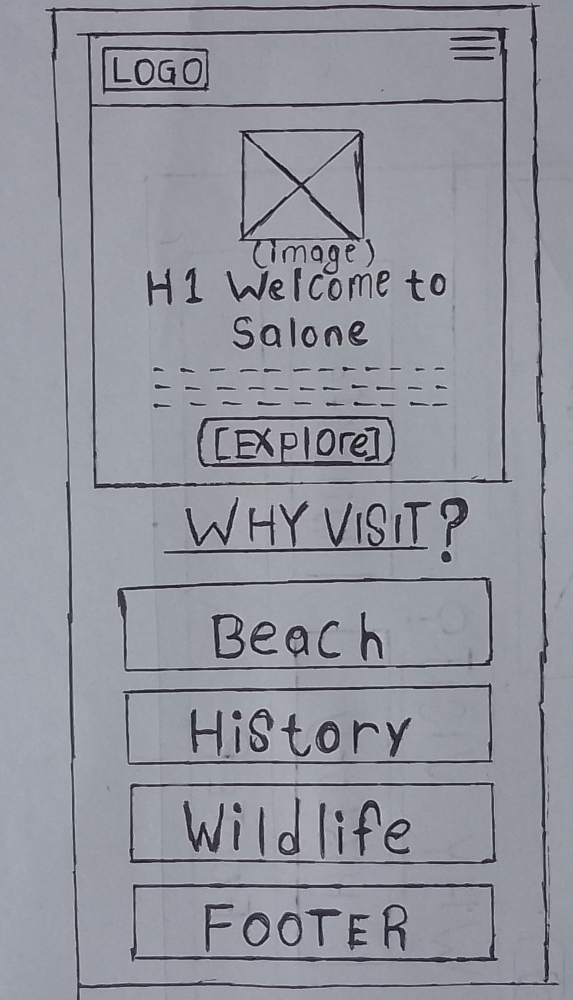
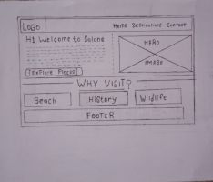

Site Name: Salone Discover
Domain: salonediscover.org
I chose Salone Discover because Salone is what Sierra Leoneans proudly call their country (Mama Salone). Discover invites tourists to explore hidden gems. The name is short, memorable, and uses our local identity.
Site Purpose
Salone Discover is a tourism information hub for Sierra Leone targeting first-time visitors, diaspora, and eco-tourists. The site provides:
- 15 curated destinations across beaches, history, and wildlife
- Best time to visit, location, and cultural context
- Contact form for trip planning inquiries
- Attributions for images and data sources
Scenarios
Scenario 1: First-time tourist from USA
"I want the best beaches in Africa that are safe and not crowded. Where should I go in Sierra Leone?"
-> User visits Destinations page, filters by Beach category, sees River Number 2, Tokeh, Lumley with images and best time to visit.
Scenario 2: Sierra Leonean in diaspora
"I left Salone 20 years ago. What historical sites can I show my children?"
-> User reads Bunce Island, Cotton Tree, Railway Museum pages to reconnect with history.
Scenario 3: Eco-tourist / Researcher
"I want to see chimpanzees and rainforest conservation projects."
-> User finds Tacugama Sanctuary, Gola Rainforest, Tiwai Island with conservation info and contact form.
Color Schema - Sierra Leone National Flag
The site uses official flag colors with accessible dark versions for WCAG AA compliance.
#1EB53A
Buttons, Card left border
Agriculture
#FFFFFF
Body background
Unity & Justice
#0072C6
Footer, Links, Hover
Atlantic Ocean
#0E7A2A
Header BG (7.2:1 contrast)
#E6F2FF
Hero BG & Highlights
#1A1A1A
Body Text (16:1 contrast)
Implementation: Green Header with blue 5px bottom border, White body, Blue footer with green 5px top border. All text passes WAVE and Lighthouse accessibility.
Typography
Headings: Montserrat Bold 700 - modern, clean, used for H1-H3, navigation, buttons. Represents strength and clarity of Sierra Leone.
Body: Lora Regular 400 & 600 - readable serif, elegant for storytelling about culture and history.
Fonts loaded from Google Fonts with display=swap for performance. Font sizes: 16px base, 1.2rem line height, responsive scaling.
Wireframes - Home Page
Black and white sketches focusing on structure, layout, functionality. Not colors or images. Mobile (320px) stacked, Desktop (1024px) side-by-side.
Mobile View - 320px

Features: Logo top left, hamburger right, hero image + text stacked, 3 cards stacked, green header white body blue footer structure
Desktop View - 1024px

Features: Logo left, nav horizontal Home Destinations Contact, hero side by side, 3 cards in row, footer
Note: Wireframes are hand-drawn sketches photographed. Images saved as wireframe-small.jpg and wireframe-large.jpg in images folder. Shows responsive layout from small to large viewport.
Navigation
Header: Logo (links to Home) | Home | Destinations | Contact | Attributions
Footer: Copyright, quick links, Project Video link, flag meaning note
Site Map
- index.html - Home - Hero + Why Visit + CTA
- destinations.html - 15 destinations from places.json, filter, modal dialog
- contact.html - Contact form with validation -> thankyou.html
- thankyou.html - Form data display via URLSearchParams
- attributions.html - Image sources, data sources
- site-plan.html - This document